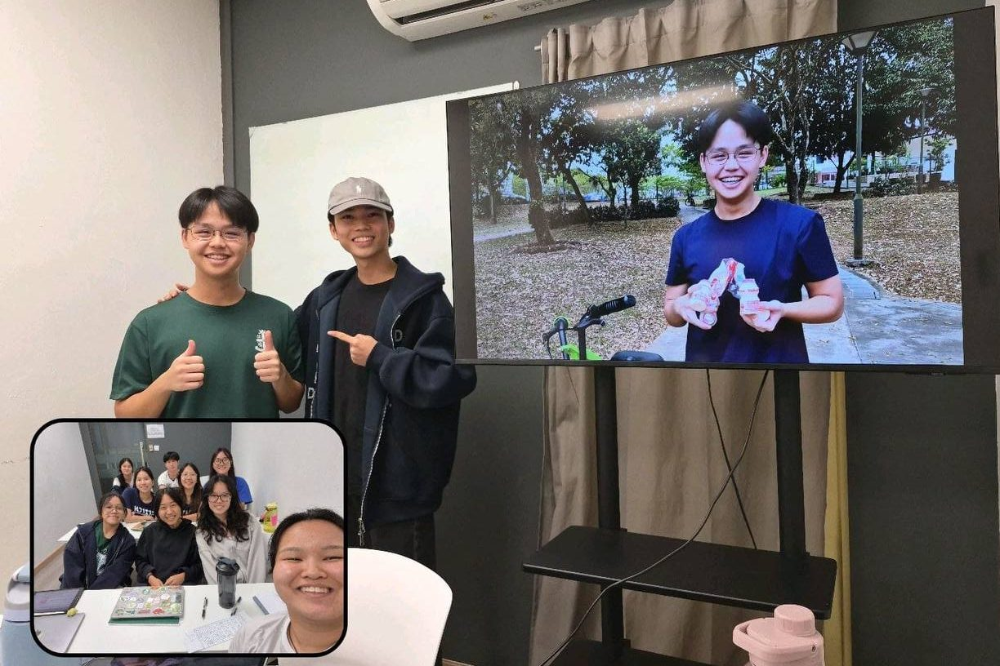
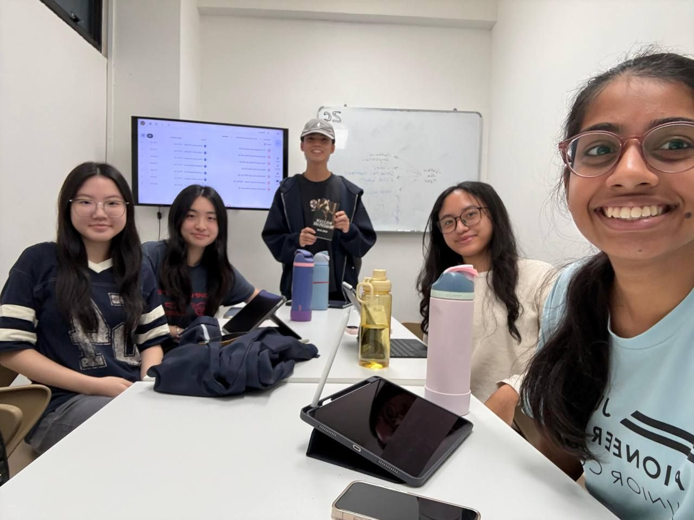
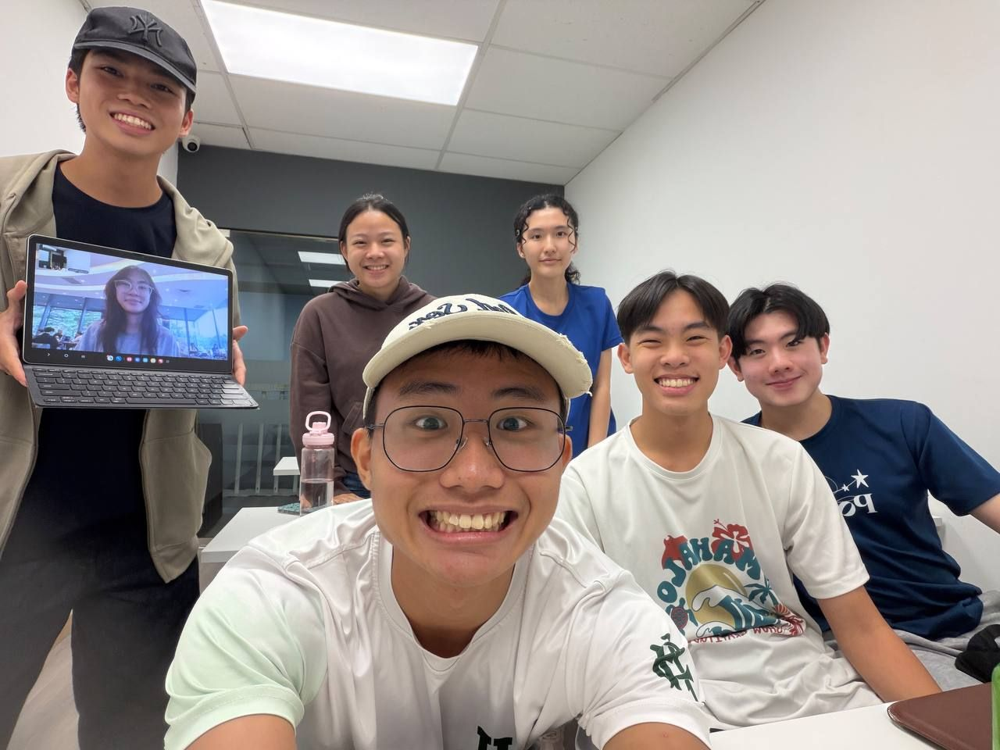
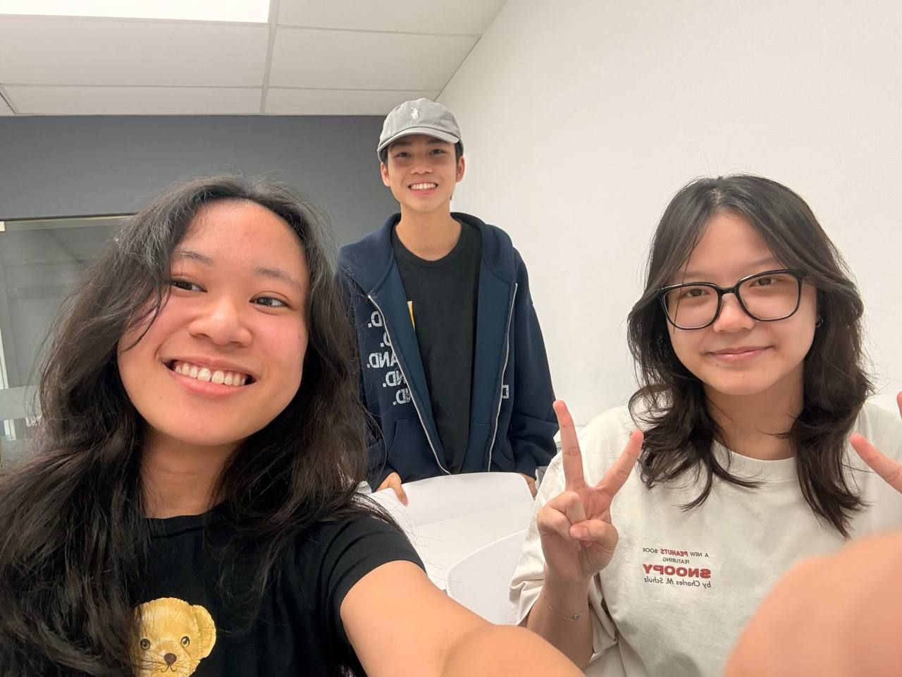

I wander thro' each charter'd street, Near where the charter'd Thames does flow. And mark in every face I meet Marks of weakness, marks of woe.
- charter'd, twice. A street can be owned. A river should not be. Repeating the word makes ownership feel total.
- mark, then Marks. A verb becomes a noun. The speaker looks, and what he sees is damage already done.
- every. No face is spared. Watch this word return through the rest of the poem.
William Blake, “London” (1794), lines 1–4
In class
Where the discussion happens
Every class is built around conversation: reading closely, testing ideas against each other, and arguing them out together.




Trusted by students from
- Anglo-Chinese School (Independent)
 Anglo-Chinese School (International)
Anglo-Chinese School (International)- St. Joseph’s Institution
- St. Joseph’s Institution International
- School of the Arts, Singapore
- Singapore Sports School
- Hwa Chong International
Testimonials
What our students say
I’d definitely recommend joining the langlit class! I find the teaching style specific and friendly towards weaker students. I used to attend another tuition centre and I found Lucas to be much more effective! The paper 1 notes and cheatsheets provided were super helpful leading up to IB and I managed to jump from grade 4 to 6! Lucas always taught us a formulaic way of approaching paper 1 and 2 using a combination of different categories of techniques. I found that helpful for those who were not naturally good at langlit like me. His marking and feedback was specific and he understood my individual strengths and weaknesses, from which he tailored feedback accordingly. He is also very encouraging!
Lucas was super effective as a tutor, in my opinion! Lucas had been tutoring me since the end of year 5, before which I always struggled with langlit always got grade 4s. With Lucas, my final IB grade improved to a 6.
Lucas gives really good personalised feedback on my practice essays, from which I managed to learn what I can improve on my next practice essay!
Lucas was super helpful, especially with paper 1, where he had concise notes about the intricacies and analytical techniques required. For paper 2, his techniques on question analysis and paragraph prepping were very helpful in constructing general ideas before applying them in the final IB exam.
Lucas is a dedicated and helpful teacher who always goes above and beyond to help any student, despite his heavy IB workload. He creates original notes which are comprehensive, yet concise. His feedback was relevant and helped me correct many mistakes in my writing.
Lucas is a really passionate and hardworking tutor. Despite juggling IB in addition to tutoring, he still provided curated notes and marked his students’ work weekly. His teaching was very clear and detailed which made writing Langlit essays much more enjoyable.
Subjects
Eight IB Diploma subjects, at Standard and Higher Level
Every class follows the IB Diploma syllabus. Choose a subject to see what we cover, how it is assessed and when classes run.
Group 1Studies in language and literature
- English A: Language & LiteratureSL · HL
- English A: LiteratureSL · HL
Group 3Individuals and societies
- Business ManagementSL · HL
- EconomicsSL · HL
- GeographySL · HL
- PsychologySL · HL
Group 5Mathematics
In the classroom
Unlike the lessons you have sat through before
You do the talking
Every lesson is built around discussion. You test your reading against other people's and learn to defend it.
A new way into the subject
We start from how each subject thinks: how a writer, an economist or a mathematician builds an argument. Then you learn to make that argument yourself.
Tutors who know the course
Experienced tutors lead every class and show you what each assessment is really asking for.
Curious what a lesson is like?
Tell us which subjects you take and where you feel stuck. We will reply with class times and the next step.